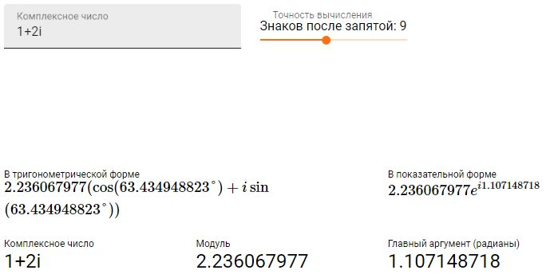
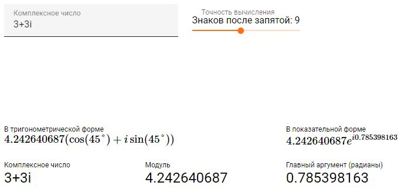
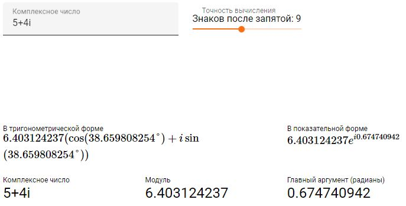
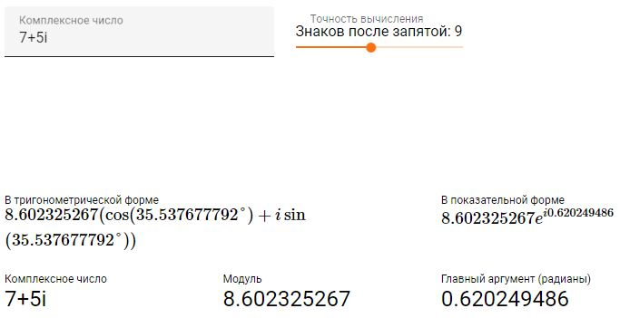

Київський національний університет імені Тараса Шевченка
Факультет інформаційних технологій
Кафедра програмних систем та технологій
студент групи IПЗ-42
Бровенко Вадим
2021
Для выполнения задач был выбран язык программирования Scheme, т.к. он является строго функциональным и прост в освоении благодаря упрощенному синтаксису языка.
Среда разработки была выбрана DrRacket, так как она является бесплатной и имеет понятный и упрощенный интерфейс.
Найти сумму четырех дробей 1/a + 1/b + 1/c + 1/d, где a, b, c, d - нечетные натуральные числа. Если сумма этих дробей равна 1, то вывести сообщение "YES", иначе "NO". Для решения задачи написать процедуру приведения дробей к общему знаменателю.
; =============== Zadanie 1 ===============
; поиск НОД для 2 чисел метод Евклида
; НОД(a, b) = НОД(b,r) r = остаток от деления a и b
(define (my-gcd a b)
(if (= b 0)
a
(my-gcd b (remainder a b))))
; получение числителя
(define (chislitel x)
; поиск НОД для сокращения дроби
(let ((g (my-gcd (car x) (cdr x))))
(/ (car x) g)))
; получение знаменателя
(define (znamenatel x)
; поиск НОД для сокращения дроби
(let ((g (my-gcd (car x) (cdr x))))
(/ (cdr x) g)))
; создание рационального числа
(define (create-rational c z)
(cons c z))
; вывод рационального числа
(define (print-rational x)
(display (chislitel x))
(display "/")
(display (znamenatel x)))
; вывод суммы исходных рациональных чисел
(define i 4)
(define (print-source-rat list-nbrs)
; пока есть элементы в списке
(cond ((not (null? list-nbrs))
(print-rational (cons 1 (car list-nbrs)))
(cond ((= i 1) ; если элемент последний
(display " = "))
(else
(display " + ")))
(set! i (- i 1)) ; уменьшение счетчика чисел
(print-source-rat (cdr list-nbrs))))) ; переход к следующему числу
; поиск НОК для нескольких чисел = lcm(lcm(lcm(a b) c) d)
(define (my-lcm list-nbrs)
(define a (car list-nbrs)) ; определение 1-го числа
(define b (car (cdr list-nbrs))) ; определение 2-го числа
(display "НОК для 4 чисел:") (newline)
(set! list-nbrs (cdr (cdr list-nbrs))) ; убрать из списка первые 2 числа
(define (iter-lcm)
(display "a = ")(display a) (display "| b = ") (display b) (newline)
; НОК для двух чисел = (a * b) / gcd(a b)
(set! a (/ (* a b) (my-gcd a b)))
; если список чисел не пуст
(cond ((not (null? list-nbrs))
(set! b (car list-nbrs)) ; для b назначается следующее число из списка
(set! list-nbrs (cdr list-nbrs)) ; из списка удаляется это число
(iter-lcm)) ; переход к следующей итерации
(else
a))) ; иначе найдено НОК для чисел
(iter-lcm)
)
; расчет суммы рациональных чисел
(define j 4)
(define (find-sum list-znams)
(define common-chislitel 0) ; сумма в числителе
(define common-devider (my-lcm odd-nbrs)) ; расчет общего знаменателя
(display "НОК = ") (display common-devider) (newline)
(print-source-rat list-znams) ; вывод исходной суммы
(define (iter-sum list-znams)
; если есть знаменатели
(cond ((not (null? list-znams))
; к общему числителю добавить вычисленный числитель рац числа
(set! common-chislitel
(+ common-chislitel ( / common-devider (car list-znams))))
; вывод рационального числа после приведения к общему знаменателю
(display ( / common-devider (car list-znams)))
(display "/")
(display common-devider)
(if (= j 1)
(display " = ")
(display " + "))
(set! j (- j 1))
(iter-sum (cdr list-znams))) ; переход к следующей итерации
(else ; иначе все рац числа сложены
(display common-chislitel)
(display "/")
(display common-devider) (display " = ")
; создание рационального числа (для возможного сокращения)
(let ((result-rat (create-rational common-chislitel common-devider)))
(print-rational result-rat) (newline)
; проверка на равность 1
(if (= 1 (/ (chislitel result-rat) (znamenatel result-rat)))
(display "YES")
(display "NO")))
(newline))))
(iter-sum list-znams)
)
; создание списка рациональных чисел
(define odd-nbrs (list 4 2 7 9))
; сумма заданных рациональных чисел
(find-sum odd-nbrs)
Для проверки правильной работы программы был использован онлайн калькулятор https://ru.onlinemschool.com/math/assistance/fraction/calculator/
Создать список из комплексных чисел, заданных в алгебраичной форме в декартовых координатах z = a + bi. Создать новый список, элементы которого есть комплексные числа, переведенные из декартовых координат в полярные. Комплексное число в полярных координатах состоит из модуля |z| = sqrt(a^2 + b^2) и аргумента arg z = arctg(b, a). Напечатать новый список.
; =============== Zadanie 2 ===============
; ---------- Декартова форма
; получить действительную часть компл числа
(define (my-real-part z)
(car z))
; получить мнимую часть компл числа
(define (my-imag-part z)
(cdr z))
; создать компл число (действ и мнимая части)
(define (make-real-imag a b)
(cons a b))
; вывести комплексное число в декартовой форме
(define (print-real-imag z)
(display (my-real-part z))
(display " + ")
(display (my-imag-part z))
(display "i"))
; ---------- Полярная форма
; получение модуля из декартовой формы
(define (modul z)
(sqrt (+ (expt (my-real-part z) 2) (expt (my-imag-part z) 2))))
; получение аргумента из декартовой формы
(define (argument z)
(atan (my-imag-part z) (my-real-part z)))
; перевод из декартовой в полярную форму
(define (make-polar-from-real-imag z)
(cons (modul z) (argument z)))
; вывести комплексное число в полярной форме
(define (print-modul-arg z)
(display "|z| = ")
(display (car z))
(display " arg = ")
(display (cdr z)))
; список компл чисел в полярной форме
(define list-modul-arg (list))
; список компл чисел в декартовой форме
(define list-real-imag (list))
; создание списка чисел в декартовой форме заданного кол-ва
(define (create-list-real-imag count)
(define (list-iter r i)
; если последнее число
(cond ((< count 2)
; вернуть комплексное число
(make-real-imag r i))
(else
; уменьшить счетчик кол-ва чисел
(set! count (- count 1))
; рекурсивный вызов для следующего компл числа
(cons (make-real-imag r i) (list-iter (+ r 2) (+ i 1))))))
; вызов рекурсии для создания списка
(list-iter 1 2)
)
; создание списка чисел в полярной форме из списка чисел в декартовой форме
(define (create-list-modul-arg dekart-list)
; если список не пустой и car(list) не пара - значит это последняя пара списка
(cond ((and (not (null? dekart-list)) (not (pair? (car dekart-list))))
(make-polar-from-real-imag dekart-list)) ; создать полярную форму из декартовой
(else
; иначе рекурсивно соединять результаты преобразований в полярную форму
(cons (make-polar-from-real-imag (car dekart-list))
(create-list-modul-arg (cdr dekart-list)))
)
)
)
; вывод списков комплексных чисел в двух формах форме
(define (print-two-forms dekart-nbrs polar-nbrs)
; если список не пустой и первый элемент пара
(cond ((and (not (null? dekart-nbrs)) (pair? (car dekart-nbrs)))
(print-real-imag (car dekart-nbrs)) ; вывесте компл число в декартовом виде
(display "\t\t\t")
(print-modul-arg (car polar-nbrs)) ; вывесте компл число в полярном виде
(newline)
(print-two-forms (cdr dekart-nbrs) (cdr polar-nbrs)))
(else ; иначе последняя пара в списке
(print-real-imag dekart-nbrs)
(display "\t\t\t")
(print-modul-arg polar-nbrs)
(newline))))
; создание списка компл чисел
(set! list-real-imag (create-list-real-imag 4))
(display "Список в декартовой форме:")(display list-real-imag) (newline)
;(display "Комплексные числа в полярной форме:")
(set! list-modul-arg (create-list-modul-arg list-real-imag))
(display "Декартова форма: \tПолярная форма") (newline)
; вывод двух форм комплексных чисел
(print-two-forms list-real-imag list-modul-arg)
Для сравнения результата работы созданной программы был использован онлайн калькулятор для работы с комплексными числами https://planetcalc.ru/7935/
|  |  |
|  |  |
В лабораторной работе были реализованы:
При анализе результатов работы реализованных программ с онлайн калькуляторами было определено, что результаты идентичные - означает, что функции отрабатывают верно.
При выполнении 5 лабораторной работы возникали трудности при реализации списка пар, сначала список создавался последовательным добавлением пар в список, что привело к неверным результатам при извлечении пар из списка. Для решения данной проблемы принцип добавления пар был заменен на рекурсивное добавление начиная с последней пары.